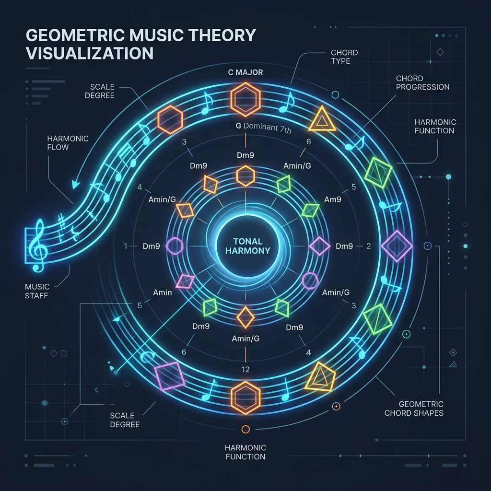

flowchart LR
subgraph Horizontal Domain
S["<b>Scale / Mode</b><br/>1 - 2 - 3 - 4 - 5 - 6 - 7<br/><i>(Melodic Linear Motion)</i>"]
end
subgraph Vertical Domain
C["<b>Extended Chord</b><br/>1 - 3 - 5 - 7 - 9 - 11 - 13<br/><i>(Simultaneous Harmonic Density)</i>"]
end
S <--> |"Tertian Permutation<br/>Odd-Degree Stacking"| C
The Geometry of Harmony: Deriving, Superimposing, and Instantly Recalling Chords from Scales
A unified architectural framework for Chord-Scale Theory, Upper Structure Triads, modal derivations, and rapid mental models for improvisers, composers, and theorists.
Music Theory
Jazz Harmony
Chord-Scale Theory
Composition
Improvisation
Cognitive Mnemonic Systems

1. Introduction: The Chord-Scale Equivalence Principle
In traditional classical pedagogy, chords and scales are frequently taught as two separate, isolated domains: * A chord is conceived vertically as an instantaneous stack of thirds (\(1 - 3 - 5 - 7\)) frozen in time. * A scale is conceived horizontally as a linear sequence of stepwise pitches (\(1 - 2 - 3 - 4 - 5 - 6 - 7\)) moving through time.
The transformative breakthrough of mid-20th-century modern music theory—crystallized by George Russell in The Lydian Chromatic Concept of Tonal Organization and subsequently formalized in the Berklee College of Music curriculum—is the Chord-Scale Equivalence Principle:
\[\mathbf{Chord} \equiv \mathbf{Scale}\]
A chord is nothing more than a scale played simultaneously (vertically), and a scale is nothing more than a chord played sequentially (horizontally).
When you look at a chord symbol such as \(\text{Cmaj13}(\sharp 11)\), you are not looking at seven disparate notes added onto a triad; you are looking at the C Lydian scale sounded all at once:
\[\{C, D, E, F\sharp, G, A, B\} \longleftrightarrow \underbrace{C}_{\text{Root}} - \underbrace{E}_{3\text{rd}} - \underbrace{G}_{5\text{th}} - \underbrace{B}_{7\text{th}} - \underbrace{D}_{9\text{th}} - \underbrace{F\sharp}_{11\text{th}(\sharp 11)} - \underbrace{A}_{13\text{th}}\]
This equivalence unlocks two superpowers: 1. Derivation: You can derive every conceivable chord quality, tension, and voicing directly from parent scales without brute-force memorization. 2. Superimposition & Upper Structure Triads (UST): Instead of thinking in complex 6-note or 7-note extensions in real time, you can superimpose simple, familiar triads (e.g., playing a \(D\) major triad over a \(C7\) shell to instantly sound a sophisticated \(\text{C13}\sharp 11\)).
This treatise establishes a rigorous, comprehensive architectural framework to superimpose chords and scales, analyze their acoustic origins, and deploy lightning-fast mental models on stage and in the studio.
2. The Tertian Stacking Algorithm: How Scales Generate Chords
Any 7-note diatonic or heptatonic scale can be completely converted into its 13th chord by reordering its degrees into alternating tertian (third-based) intervals.
Consider the degree indices of any heptatonic scale: \(\{1, 2, 3, 4, 5, 6, 7\}\). If we skip every other note in a circular loop modulo 7, we obtain:
\[\mathbf{1} \longrightarrow \mathbf{3} \longrightarrow \mathbf{5} \longrightarrow \mathbf{7} \longrightarrow \mathbf{2}\,(+7 = \mathbf{9}) \longrightarrow \mathbf{4}\,(+7 = \mathbf{11}) \longrightarrow \mathbf{6}\,(+7 = \mathbf{13})\]
Scale Degree: 1 2 3 4 5 6 7
│ │ │ │ │ │ │
▼ ▼ ▼ ▼ ▼ ▼ ▼
Harmonic Role: Root 9th 3rd 11th 5th 13th 7th
│ │ │ │
└───────────┼───────────┼───────────┘
│ │
[Foundation: Guide Tones & Fifth]
│
[Upper Extensions: Color Tensions (9, 11, 13)]The Three Functional Strata of a Chord-Scale:
- The Root & Guide Tones (\(1, 3, 7\)):
- The Root (\(1\)) provides the acoustic reference point.
- The 3rd (\(3\) or \(\flat 3\)) determines the basic modal quality (Major vs. Minor).
- The 7th (\(7, \flat 7,\) or \(\circ 7\)) establishes harmonic function (Tonic stability, Dominant tension, or Subdominant preparation).
- The Acoustic Anchor (\(5\)):
- The 5th (\(\natural 5, \flat 5,\) or \(\sharp 5\)) reinforces acoustic stability or, if altered, drives intense harmonic propulsion.
- Available Tensions vs. Avoid Notes (\(9, 11, 13\)):
- Available Tensions: Notes that can be freely added or held against the chord to enrich its harmonic color without obscuring the guide tones.
- Avoid Notes (Handle-with-Care Notes): Scale degrees that form a dissonant minor 9th (semitone above) with an essential chord tone (most notably, the natural 4th against the major 3rd in major chords). In jazz and modern composition, avoid notes are used as melodic passing tones rather than sustained harmonic chord members.
3. The Diatonic Mother Ship: Major Scale & Its 7 Modes
The Major Scale (Ionian) is the foundational template of Western harmony. By rotating the starting tonic through each of its 7 degrees, we generate the 7 Diatonic Modes. Every mode generates a distinct chord family:
graph TD
M["Parent Major Scale (C D E F G A B)"]
M --> I["I. Ionian (Maj7) | Tensions: 9, 13"]
M --> II["II. Dorian (m7) | Tensions: 9, 11, 13"]
M --> III["III. Phrygian (m7) | Tensions: 11"]
M --> IV["IV. Lydian (Maj7#11) | Tensions: 9, #11, 13"]
M --> V["V. Mixolydian (7) | Tensions: 9, 13"]
M --> VI["VI. Aeolian (m7) | Tensions: 9, 11"]
M --> VII["VII. Locrian (m7b5) | Tensions: 11, b13"]
Complete Diatonic Chord-Scale Specification Table
| Mode | Scale Formula | Key Root (C Parent) | Chord Generated | Available Tensions | Avoid Note | Sonic Character & Function |
|---|---|---|---|---|---|---|
| I. Ionian | \(1 - 2 - 3 - 4 - 5 - 6 - 7\) | \(C\) | \(\text{Cmaj7}, \text{Cmaj9}, \text{Cmaj13}\) | \(9, 13\) | \(4\,(11)\) | Bright, stable, definitive tonic. Avoid \(11\) because it clashes with the major \(3\)rd. |
| II. Dorian | \(1 - 2 - \flat 3 - 4 - 5 - 6 - \flat 7\) | \(D\) | \(\text{Dm7}, \text{Dm9}, \text{Dm11}, \text{Dm13}\) | \(9, 11, 13\) | None (or \(\natural 6\) if tonic minor) | Cool, soulful minor. The \(\natural 6\) creates modern jazz vitality without the melancholy of natural minor. |
| III. Phrygian | \(1 - \flat 2 - \flat 3 - 4 - 5 - \flat 6 - \flat 7\) | \(E\) | \(\text{Em7}, \text{Esus4}(\flat 9)\) | \(11\) | \(\flat 2, \flat 6\) | Dark, Spanish, Flamenco tension. The \(\flat 2\) creates immediate sub-tonic gravity. |
| IV. Lydian | \(1 - 2 - 3 - \sharp 4 - 5 - 6 - 7\) | \(F\) | \(\text{Fmaj7}(\sharp 11), \text{Fmaj13}(\sharp 11)\) | \(9, \sharp 11, 13\) | None | Radiant, ethereal, acoustically pure. The \(\sharp 11\) eliminates the minor 9th clash, leaving all 7 notes usable. |
| V. Mixolydian | \(1 - 2 - 3 - 4 - 5 - 6 - \flat 7\) | \(G\) | \(\text{G7}, \text{G9}, \text{G13}, \text{G7sus4}\) | \(9, 13\) | \(4\,(11)\) | Bluesy, functional dominant. Drives resolution toward tonic chord I. |
| VI. Aeolian | \(1 - 2 - \flat 3 - 4 - 5 - \flat 6 - \flat 7\) | \(A\) | \(\text{Am7}, \text{Am9}, \text{Am11}\) | \(9, 11\) | \(\flat 6\) | Classical natural minor. Melancholic, somber; \(\flat 6\) tends to resolve downward to \(5\). |
| VII. Locrian | \(1 - \flat 2 - \flat 3 - 4 - \flat 5 - \flat 6 - \flat 7\) | \(B\) | \(\text{Bm7}\flat 5, \text{Bm11}\flat 5\) | \(11, \flat 13\) | \(\flat 2\) | Unstable, half-diminished. Quintessential \(\text{ii}^{\circ}\) chord in minor ii-V-i progressions. |
Comprehensive Interval Structures for Diatonic Chords
To instantly visualize how the scale translates into a vertical chord, here is the exact intervallic formula for each 13th chord derived from the major scale:
Chord: Maj13
Structure: Root - Major 3rd - Perfect 5th - Major 7th - Major 9th - Perfect 11th (Avoid) - Major 13th
Intervals: 1 - 3 - 5 - 7 - 9 - 11 - 13
Chord: m13
Structure: Root - Minor 3rd - Perfect 5th - Minor 7th - Major 9th - Perfect 11th - Major 13th
Intervals: 1 - b3 - 5 - b7 - 9 - 11 - 13
Chord: m11(b9, b13)
Structure: Root - Minor 3rd - Perfect 5th - Minor 7th - Minor 9th (Avoid) - Perfect 11th - Minor 13th (Avoid)
Intervals: 1 - b3 - 5 - b7 - b9 - 11 - b13
Chord: Maj13(#11)
Structure: Root - Major 3rd - Perfect 5th - Major 7th - Major 9th - Augmented 11th - Major 13th
Intervals: 1 - 3 - 5 - 7 - 9 - #11 - 13
Chord: 13 (Dominant)
Structure: Root - Major 3rd - Perfect 5th - Minor 7th - Major 9th - Perfect 11th (Avoid) - Major 13th
Intervals: 1 - 3 - 5 - b7 - 9 - 11 - 13
Chord: m11(b13)
Structure: Root - Minor 3rd - Perfect 5th - Minor 7th - Major 9th - Perfect 11th - Minor 13th (Avoid)
Intervals: 1 - b3 - 5 - b7 - 9 - 11 - b13
Chord: m11b5(b9, b13)
Structure: Root - Minor 3rd - Diminished 5th - Minor 7th - Minor 9th (Avoid) - Perfect 11th - Minor 13th
Intervals: 1 - b3 - b5 - b7 - b9 - 11 - b13
4. Superimposition & Upper Structure Triads (UST)
The greatest obstacle in applying Chord-Scale Theory in real-time performance is cognitive overload: calculating \(9\)ths, \(\sharp 11\)ths, and \(\flat 13\)ths note-by-note is far too slow.
Upper Structure Triads (UST) bypass this bottleneck. By superimposing a simple, fully formed triad over a bass note or a two-note guide-tone shell (\(3\)rd and \(7\)th), you immediately materialize complex, voice-led extended chords.
[Upper Structure Triad] <--- Familiar Major or Minor Triad
═════════════════════════
[Guide Tones (3 & 7)] <--- Essential Harmonic Shell
─────────────────────────
[Bass Root] <--- Acoustic Foundation1. Superimposition over Major 7th Chords (Base: Cmaj7)
Over a \(C\) pedal or a \(\{C, E, B\}\) shell:
| Superimposed Triad | Notes in Triad | Intervals Relative to C | Resulting Chord Sound | Musical Application |
|---|---|---|---|---|
| \(E\) minor (iii) | \(E - G - B\) | \(3 - 5 - 7\) | \(\text{Cmaj7}\) (Rootless) | Ultra-clean basic chord shell. |
| \(G\) major (V) | \(G - B - D\) | \(5 - 7 - 9\) | \(\text{Cmaj9}\) | Lush, rich ballad voicing. |
| \(B\) minor (vii) | \(B - D - F\sharp\) | \(7 - 9 - \sharp 11\) | \(\text{Cmaj7}(\sharp 11)\) (Lydian) | Mystical, modern, crystalline Lydian color. |
| \(D\) major (II) | \(D - F\sharp - A\) | \(9 - \sharp 11 - 13\) | \(\text{Cmaj13}(\sharp 11)\) | The ultimate Lydian acoustic spread (no root or 5th in upper voice). |
TipThe Lydian Superimposition Mnemonic
To play a breathtaking Lydian major chord instantly: Play a Major Triad one whole step above the root! * Over \(C\): Play a \(D\) major triad \(\longrightarrow\) Instantly gives \(9, \sharp 11, 13\). * Over \(E\flat\): Play an \(F\) major triad \(\longrightarrow\) Instantly gives \(9, \sharp 11, 13\).
2. Superimposition over Minor 7th Chords (Base: Dm7)
Over a \(D\) bass or a \(\{D, F, C\}\) shell:
| Superimposed Triad | Notes in Triad | Intervals Relative to D | Resulting Chord Sound | Musical Application |
|---|---|---|---|---|
| \(F\) major (\(\flat\text{III}\)) | \(F - A - C\) | \(\flat 3 - 5 - \flat 7\) | \(\text{Dm7}\) | Classic rootless minor voicing. |
| \(A\) minor (v) | \(A - C - E\) | \(5 - \flat 7 - 9\) | \(\text{Dm9}\) | Smooth, melancholic jazz standard sound. |
| \(C\) major (\(\flat\text{VII}\)) | \(C - E - G\) | \(\flat 7 - 9 - 11\) | \(\text{Dm11}\) | Open, suspended, modern modal color. |
| \(E\) minor (ii) | \(E - G - B\) | \(9 - 11 - 13\) | \(\text{Dm13}\) (Dorian) | Pure Dorian funk / jazz modal color (\(\natural 13\)). |
3. Superimposition over Dominant 7th Chords (Base: C7)
The dominant 7th chord (\(1 - 3 - 5 - \flat 7\)) possesses maximum harmonic malleability. You can superimpose triads to produce either pure consonant extensions or alterations (\(\flat 9, \sharp 9, \sharp 11, \flat 13\)):
Over a \(\{C, E, B\flat\}\) tritone shell:
| Upper Triad | Notes | Intervals Relative to C | Resulting Chord | Scale Implied | Character & Tension |
|---|---|---|---|---|---|
| \(D\) major (\(\text{II}\)) | \(D - F\sharp - A\) | \(9 - \sharp 11 - 13\) | \(\text{C13}(\sharp 11)\) | Lydian Dominant | Bright, acoustic, modern fusion. |
| \(A\flat\) major (\(\flat\text{VI}\)) | \(A\flat - C - E\flat\) | \(\sharp 5\,(\flat 13) - 1 - \sharp 9\) | \(\text{C7}(\sharp 9, \flat 13)\) | Altered Scale | Classic hard-bop resolution to minor tonic. |
| \(F\sharp\) major (\(\sharp\text{IV} / \flat\text{V}\)) | \(F\sharp - A\sharp - C\sharp\) | \(\sharp 11 - \flat 7 - \flat 9\) | \(\text{C7}(\flat 9, \sharp 11)\) | Tritone / Altered | Intense dissonance, maximum forward pull. |
| \(E\flat\) minor (\(\flat\text{iii}\)) | \(E\flat - G\flat - B\flat\) | \(\sharp 9 - \sharp 11 - \flat 7\) | \(\text{C7alt}\) | Altered Scale | Dark, menacing, modern jazz tension. |
| \(A\) major (\(\text{VI}\)) | \(A - C\sharp - E\) | \(13 - \flat 9 - 3\) | \(\text{C13}(\flat 9)\) | Half-Whole Diminished | Symmetrical, bittersweet bluesy resolution. |
| \(E\flat\) major (\(\flat\text{III}\)) | \(E\flat - G - B\flat\) | \(\sharp 9 - 5 - \flat 7\) | \(\text{C7}(\sharp 9)\) | Hendrix Chord | Raw blues power, simultaneous major/minor ambiguity. |
5. The Melodic Minor Universe: The Harmonic Swiss Army Knife
While the major scale yields standard functional harmony, the Melodic Minor Scale (specifically the ascending Jazz Minor: \(1 - 2 - \flat 3 - 4 - 5 - 6 - 7\)) is the master engine that fuels modern jazz, fusion, film scores, and impressionism.
Because it contains a minor third alongside a major sixth and major seventh, it eliminates awkward augmented-second leaps while generating seven modes with zero avoid notes.
flowchart TD
MM["Melodic Minor Scale (1-2-b3-4-5-6-7)"]
MM --> M1["1. Melodic Minor (mMaj7)"]
MM --> M2["2. Dorian b2 (sus4 b9)"]
MM --> M3["3. Lydian Augmented (Maj7#5)"]
MM --> M4["4. Lydian Dominant (7#11)"]
MM --> M5["5. Mixolydian b6 (7b13)"]
MM --> M6["6. Locrian #2 (m7b5 nat9)"]
MM --> M7["7. Altered Scale (7alt)"]
The 7 Melodic Minor Modes Detailed
Mode 1: Melodic Minor (Jazz Minor)
- Formula: \(1 - 2 - \flat 3 - 4 - 5 - 6 - 7\)
- Chord Symbol: \(\text{Cm}(\text{maj7}), \text{Cm6}, \text{Cm9}(\text{maj7})\)
- Character: The quintessential tonic minor chord. Stable, introspective, cinematic noir.
Mode 2: Dorian \(\flat 2\) (Phrygian \(\natural 6\))
- Formula: \(1 - \flat 2 - \flat 3 - 4 - 5 - 6 - \flat 7\)
- Chord Symbol: \(\text{Csus4}(\flat 9), \text{C}\text{Phryg}^{\natural 6}\)
- Character: The iconic “Wayne Shorter chord.” Resolves the harshness of Phrygian by raising the 6th to a natural major 6th.
Mode 3: Lydian Augmented
- Formula: \(1 - 2 - 3 - \sharp 4 - \sharp 5 - 6 - 7\)
- Chord Symbol: \(\text{Cmaj7}(\sharp 5), \text{Cmaj7}(\sharp 5, \sharp 11)\)
- Character: Augmented major tonic sound. Used over \(\text{I}\Delta\sharp 5\) or modern contemporary intros/endings.
Mode 4: Lydian Dominant (Mixolydian \(\sharp 11\))
- Formula: \(1 - 2 - 3 - \sharp 4 - 5 - 6 - \flat 7\)
- Chord Symbol: \(\text{C7}(\sharp 11), \text{C9}(\sharp 11), \text{C13}(\sharp 11)\)
- Character: The supreme non-resolving dominant sound. Built on the 4th mode of melodic minor. Standard choice for \(\text{II}7\) secondary dominants and tritone substitutions (\(\text{subV}7\)).
Mode 5: Mixolydian \(\flat 6\) (Aeolian Dominant / Hindu Scale)
- Formula: \(1 - 2 - 3 - 4 - 5 - \flat 6 - \flat 7\)
- Chord Symbol: \(\text{C7}(\flat 13), \text{C9}(\flat 13)\)
- Character: Dominant chord with a minor sixth. Ideal dominant V chord when resolving down a fifth to a minor tonic (\(\text{C7}(\flat 13) \to \text{Fm}\)).
Mode 6: Locrian \(\natural 2\) (Half-Diminished)
- Formula: \(1 - 2 - \flat 3 - 4 - \flat 5 - \flat 6 - \flat 7\)
- Chord Symbol: \(\text{Cm7}\flat 5, \text{Cm9}\flat 5\)
- Character: Unlike the standard diatonic Locrian mode (which has a clashing \(\flat 2\) avoid note), Locrian \(\natural 2\) contains a consonant natural 9th. This makes \(\text{ii}^{\circ}\) chords sing with melodic clarity in minor key progressions.
Mode 7: The Altered Scale (Super Locrian / Diminished Whole-Tone)
- Formula: \(1 - \flat 2 - \flat 3 - \flat 4\,(=3) - \flat 5 - \flat 6\,(=\sharp 5) - \flat 7\)
- Re-spelled enharmonically: \(1 - \flat 9 - \sharp 9 - 3 - \sharp 11\,(\flat 5) - \flat 13\,(\sharp 5) - \flat 7\)
- Chord Symbol: \(\text{C7alt}, \text{C7}(\flat 9, \sharp 9, \sharp 11, \flat 13)\)
- Character: The most tense, explosive, and complete dominant scale in existence. It contains the root, 3rd, and \(\flat 7\), along with all four possible altered tensions: \(\flat 9, \sharp 9, \flat 5(\sharp 11),\) and \(\sharp 5(\flat 13)\).
ImportantThe Master Altered Scale Mnemonic: The Half-Step Rule
To play the Altered Scale over ANY dominant chord: Play the Melodic Minor scale one half-step above the root! * Want \(G7\text{alt}\)? Play \(A\flat\) Melodic Minor! * Want \(C7\text{alt}\)? Play \(D\flat\) Melodic Minor! * Want \(E7\text{alt}\)? Play \(F\) Melodic Minor! This single mental model eliminates hours of mental arithmetic on the bandstand.
6. Symmetrical Scales & Fixed Cyclic Superimposition
Symmetrical scales divide the 12-semitone chromatic octave into repeating geometric patterns. Because of their symmetry, a single symmetrical scale simultaneously generates multiple identical chords transposed at fixed intervals.
The 12-Tone Chromatic Circle and Symmetrical Polygons:
Whole-Tone Scale (Hexagon): Diminished Scale (Square / Octagon):
0 (C) 0 (C)
10 2 10.5 1.5
8 4 9 3
6 (F#) 7.5 4.5
6 (F#)
[Rotates every 2 semitones] [Rotates every 3 semitones]1. The Diminished Scales (Octatonic: 8 Notes)
There are two forms of the diminished scale, alternating whole and half steps:
A. Whole-Half Diminished (\(W - H - W - H - W - H - W - H\))
- Chord Matches: Fully Diminished 7th chords (\(\text{C}^{\circ 7}, \text{Cdim7}\)).
- Tensions Available: Every note a whole step above each chord tone (\(9, 11, \flat 13, 7\)).
- Symmetry: Repeats identically every minor third (3 semitones: \(C, E\flat, F\sharp, A\)).
B. Half-Whole Diminished (\(H - W - H - W - H - W - H - W\))
- Chord Matches: Dominant 7th with \(\flat 9\): \(\text{C7}(\flat 9), \text{C13}(\flat 9), \text{C7}(\sharp 9, \sharp 11)\).
- Symmetry: Contains four interlocking dominant seventh roots separated by minor thirds!
- The scale for \(\text{C7}(\flat 9)\) is identical to the scale for \(\text{E}\flat 7(\flat 9)\), \(\text{F}\sharp 7(\flat 9)\), and \(\text{A}7(\flat 9)\).
2. The Whole Tone Scale (Hexatonic: 6 Notes)
- Intervallic Formula: \(W - W - W - W - W - W\) (\(1 - 2 - 3 - \sharp 4 - \sharp 5 - \flat 7\)).
- Chord Matches: Augmented Dominant chords: \(\text{C7}(\sharp 5), \text{C7aug}, \text{C9}(\flat 5)\).
- Symmetry: Divides the octave into six equal steps of 2 semitones. There are only two unique whole tone scales in all of music (the \(C\) Whole Tone scale and the \(D\flat\) Whole Tone scale).
7. The Master Instant-Recall Decision Tree
When reading a lead sheet in real time, how does an advanced musician or arranger determine the appropriate scale in less than a second? Follow this rapid decision tree:
flowchart TD
Start["Chord Symbol on Chart"] --> Type{"What is the Chord Family?"}
Type -->|Major Quality| Maj{"Does it have #11 or #5?"}
Maj -->|Standard Maj7/Maj9| Maj1["Ionian Mode"]
Maj -->|Maj7#11| Maj2["Lydian Mode"]
Maj -->|Maj7#5| Maj3["Lydian Augmented"]
Type -->|Minor Quality| Min{"What kind of 6th or 7th?"}
Min -->|Standard m7 / m9 / m11| Min1["Dorian Mode"]
Min -->|mMaj7 / m6| Min2["Melodic Minor"]
Min -->|Dark m7 / sus4 b9| Min3["Phrygian or Dorian b2"]
Min -->|Sad / Classical m7| Min4["Aeolian"]
Type -->|Dominant 7 Quality| Dom{"What tensions are indicated?"}
Dom -->|Unaltered 7, 9, 13| Dom1["Mixolydian"]
Dom -->|7#11 Non-resolving| Dom2["Lydian Dominant"]
Dom -->|7alt / b9, #9, #5| Dom3["Altered Scale"]
Dom -->|7 b9 13 Symmetrical| Dom4["Half-Whole Diminished"]
Dom -->|7#5 / 7aug| Dom5["Whole Tone Scale"]
Type -->|Half-Diminished m7b5| HD{"What style or melodic line?"}
HD -->|Standard Bebop| HD1["Locrian"]
HD -->|Modern / Sweeter 9th| HD2["Locrian #2"]
Type -->|Diminished dim7| Dim1["Whole-Half Diminished"]
8. Physical Voice Leading: Bill Evans Rootless & McCoy Tyner Quartal Voicings
Applying chord-scale superimposition on the piano or guitar fretboard relies on two historical voicing frameworks:
1. Bill Evans Rootless Voicings (The “A” and “B” Form System)
Bill Evans revolutionized jazz accompaniment by stripping out the redundant bass root (played by the acoustic bassist) and playing compact four-note clusters in the left hand:
"Type A" Form (Starts on 3rd): "Type B" Form (Starts on 7th):
9th <--- Color Tension 5th <--- Acoustic Anchor
7th <--- Guide Tone 3rd <--- Guide Tone
5th <--- Acoustic Anchor 9th <--- Color Tension
3rd <--- Guide Tone 7th <--- Guide Tone- In a standard \(\text{ii} - \text{V} - \text{I}\) progression in \(C\) (\(\text{Dm7} - \text{G7} - \text{Cmaj7}\)):
- Dm7 (Type A): \(F - A - C - E\) (\(3 - 5 - 7 - 9\)).
- G7 (Type B): \(F - A - B - E\) (\(7 - 9 - 3 - 13\)) \(\longrightarrow\) Notice only one voice moves!
- Cmaj7 (Type A): \(E - G - B - D\) (\(3 - 5 - 7 - 9\)) \(\longrightarrow\) Effortless, stepwise voice leading.
2. McCoy Tyner Quartal Harmony (“So What” Voicings)
Pioneered by Bill Evans on Miles Davis’ Kind of Blue and expanded into a percussive language by McCoy Tyner in John Coltrane’s classic quartet: * Stack four intervals of a perfect fourth topped with a major third: \[\text{Dorian Voicing: } D \xrightarrow{\text{P4}} G \xrightarrow{\text{P4}} C \xrightarrow{\text{P4}} F \xrightarrow{\text{M3}} A\] * Because fourths lack the directional gravity of tritones, this voicing can be slid up and down the Dorian mode pentatonically without losing its modern modal character.
9. Mathematical & Acoustic Foundations
Chord-scale consonance is deeply rooted in wave physics and Fourier analysis.
Frequency: f0 2f0 3f0 4f0 5f0 6f0 7f0 8f0 9f0 10f0 11f0
Harmonic: 1st 2nd 3rd 4th 5th 6th 7th 8th 9th 10th 11th
Pitch (C=f0): C C G C E G Bb* C D E F#*
Interval: Root Octave 5th Octave Maj 3rd 5th Dom 7th Octave Maj 9th Maj 3rd #11The Acoustic Triumph of Lydian Dominant
Observe the natural harmonic overtone series generated by a vibrating string or column of air: * The 1st through 6th harmonics establish the fundamental Major Triad (\(C - E - G\)). * The 7th harmonic adds the natural Dominant 7th (\(B\flat\)). * The 9th harmonic adds the Major 9th (\(D\)). * The 11th harmonic produces an augmented fourth (\(\sharp 11\)) (\(F\sharp\)), NOT a perfect fourth!
Thus, the Lydian Dominant scale (\(1 - 2 - 3 - \sharp 11 - 5 - 6 - \flat 7\)) represents the most acoustically pure distillation of physical overtone physics in nature. George Russell based his entire Lydian Chromatic Concept on this principle: the sharp eleventh (\(\sharp 11\)) is the acoustic resting point of tonal resonance.
The Calculus of Waveform Superposition
In Fourier analysis, as treated in James Stewart’s Calculus: Early Transcendentals, any complex periodic musical tone \(F(t)\) is represented as an infinite sum of orthogonal sinusoidal basis functions:
\[F(t) = \frac{a_0}{2} + \sum_{n=1}^{\infty} \left( a_n \cos(n\omega t) + b_n \sin(n\omega t) \right)\]
When an improviser superimposes upper structure triads (\(9, \sharp 11, 13\)), they are physically aligning higher-order Fourier partials (\(n = 7, 9, 11, 13\)) with the fundamental frequency \(\omega\). Dissonance is destructive phase interference (acoustic beating), while harmonic resolution represents phase alignment along low-integer frequency ratios.
10. The Master Chord-Scale Synthesis Matrix
This reference table integrates all dimensions: chord symbol, parent scale, formula, tensions, avoid notes, and recommended upper structure superimpositions.
| Chord Symbol | Primary Parent Scale | Scale Formula | Avoid Note | Superimposed Triad (over Root) | Musical Effect / Typical Genre |
|---|---|---|---|---|---|
| \(\text{Cmaj7}\) | C Ionian | \(1 - 2 - 3 - 4 - 5 - 6 - 7\) | \(4\,(F)\) | \(G\) Major (\(5-7-9\)) | Pure diatonic stability (Ballads, Pop, Classical). |
| \(\text{Cmaj7}(\sharp 11)\) | C Lydian | \(1 - 2 - 3 - \sharp 4 - 5 - 6 - 7\) | None | \(D\) Major (\(9-\sharp 11-13\)) | Floating, luminous, modern cinema (Debussy, Film Scores). |
| \(\text{Cmaj7}(\sharp 5)\) | C Lydian Augmented | \(1 - 2 - 3 - \sharp 4 - \sharp 5 - 6 - 7\) | None | \(E\) Major (\(3-\sharp 5-7\)) | Surreal, impressionistic dreamscapes. |
| \(\text{Cm7}\) | C Dorian | \(1 - 2 - \flat 3 - 4 - 5 - 6 - \flat 7\) | None | \(B\flat\) Major (\(\flat 7-9-11\)) | Urban jazz, modal funk, soul (Miles Davis, Herbie Hancock). |
| \(\text{Cm}(\text{maj7})\) | C Melodic Minor | \(1 - 2 - \flat 3 - 4 - 5 - 6 - 7\) | None | \(G\) Major (\(5-7-9\)) | Espionage, noir, James Bond harmony, melancholic beauty. |
| \(\text{Cm7}\flat 5\) | C Locrian \(\natural 2\) | \(1 - 2 - \flat 3 - 4 - \flat 5 - \flat 6 - \flat 7\) | \(\flat 6\) | \(E\flat\text{m}\) (\(\flat 3-\flat 5-\flat 7\)) | Minor ii-V-i opening chord with sweet consonant 9th. |
| \(\text{C7}\) | C Mixolydian | \(1 - 2 - 3 - 4 - 5 - 6 - \flat 7\) | \(4\,(F)\) | \(B\flat\) Major (\(\flat 7-9-11\)) | Classic blues, boogie, traditional swing dominant. |
| \(\text{C7}(\sharp 11)\) | C Lydian Dominant | \(1 - 2 - 3 - \sharp 4 - 5 - 6 - \flat 7\) | None | \(D\) Major (\(9-\sharp 11-13\)) | Tritone substitutes, funk fusion, acoustic overtone resonance. |
| \(\text{C7alt}\) | C Altered (\(D\flat\) Mel. Min.) | \(1 - \flat 9 - \sharp 9 - 3 - \sharp 11 - \flat 13 - \flat 7\) | None | \(A\flat\) Major (\(\sharp 5-1-\sharp 9\)) or \(F\sharp\) Major | Maximum forward pull before resolution to \(\text{Fm}\) or \(\text{Fmaj}\). |
| \(\text{C13}(\flat 9)\) | C Half-Whole Diminished | \(1 - \flat 2 - \sharp 2 - 3 - \sharp 4 - 5 - 6 - \flat 7\) | None | \(A\) Major (\(13-\flat 9-3\)) | Bittersweet, lush orchestral and big-band resolution. |
| \(\text{C7}(\sharp 5)\) | C Whole Tone | \(1 - 2 - 3 - \sharp 4 - \sharp 5 - \flat 7\) | None | Augmented Triad | Dreamy, floating, whole-tone mystery (Thelonious Monk). |
| \(\text{Csus4}(\flat 9)\) | C Dorian \(\flat 2\) | \(1 - \flat 2 - \flat 3 - 4 - 5 - 6 - \flat 7\) | \(3\,(E)\) | \(B\flat\text{m}\) (\(\flat 7-\flat 9-11\)) | Spanish tension, modern ECM modal jazz (Wayne Shorter). |
11. Practice Routines for Real-Time Keyboard & Fretboard Internalization
To translate this cognitive architecture into intuitive muscle memory:
- The 3-to-9 Cycle: Over backing tracks, practice playing rootless \(3 - 5 - 7 - 9\) arpeggios through the Circle of Fifths.
- Triad Superimposition Drills:
- Hold a low \(C\) bass pedal with your left hand or foot.
- Play ascending diatonic triads in your right hand: \(C \to Dm \to Em \to F \to G \to Am \to B^{\circ}\).
- Sing each interval against the root: notice how \(Em\) sounds like the 7th chord, \(G\) sounds like the 9th chord, and \(D\) major immediately opens the Lydian sky.
- The Altered Half-Step Drill: Whenever you see an altered dominant chord, visualize the melodic minor scale one fret or key higher (\(G7\text{alt} \to A\flat\text{ Melodic Minor}\)).
12. References & Foundational Literature
- Russell, George. The Lydian Chromatic Concept of Tonal Organization (Brookline: Concept Publishing, 1953 / 2001). The genesis of chord-scale equivalence and the tonal gravity of the \(\sharp 11\) interval.
- Levine, Mark. The Jazz Theory Book (Sher Music Co., 1995). The definitive practical manual on chord-scale theory, melodic minor modes, and Bill Evans rootless voicings.
- Pease, Ted, and Ken Pullig. Modern Jazz Voicings: Arranging for Small and Medium Ensembles (Berklee Press, 2001). Formal methodology for upper structure triads and mechanical tension scoring.
- Persichetti, Vincent. Twentieth-Century Harmony: Creative Aspects and Practice (W. W. Norton & Company, 1961). Rigorous classical treatment of polychords, quartal harmony, and symmetrical scale systems.
- Nettles, Barrie, and Richard Graf. The Chord Scale Theory & Jazz Harmony (Advance Music, 1997). The official pedagogical curriculum of the Berklee Harmony Department.
- Stewart, James. Calculus: Early Transcendentals (8th ed., Cengage Learning). Chapter on Fourier Series and Harmonic Superposition, modeling periodic waveforms as linear combinations of orthogonal sinusoidal harmonics.